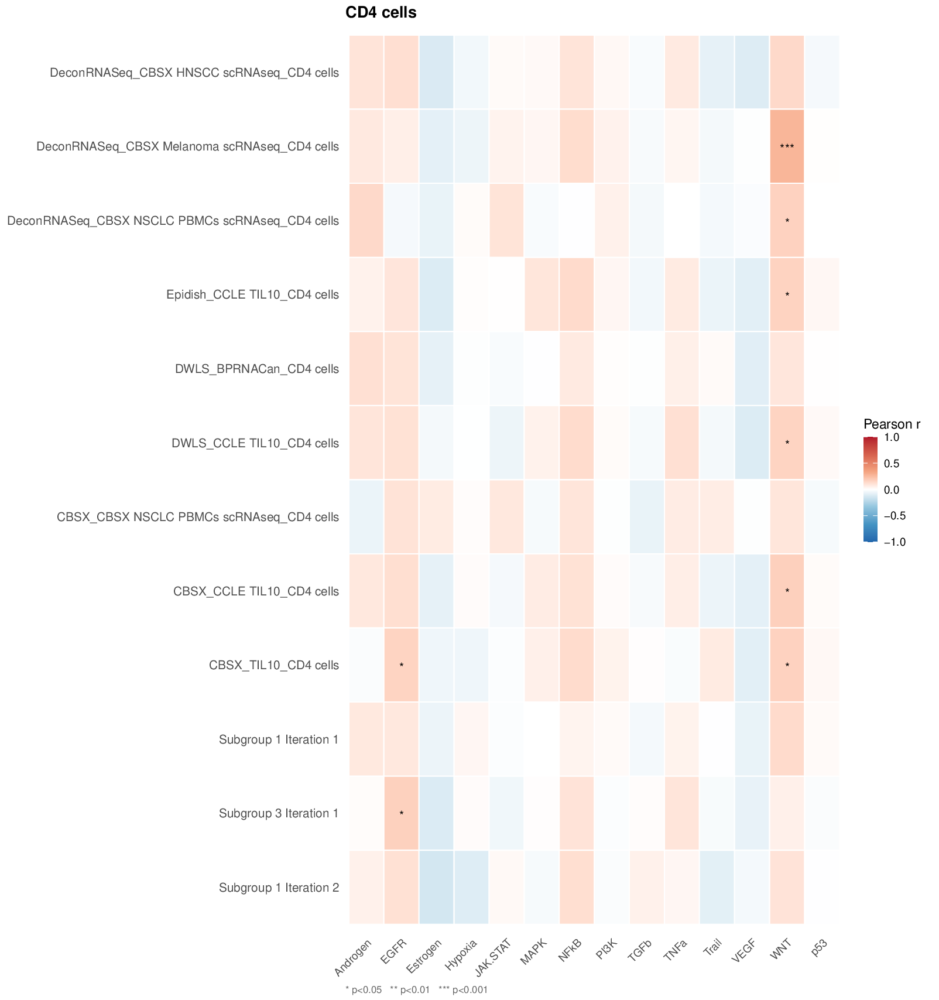

Cell type processing
Deconvolution analysis reduces the dimensionality and heterogeneity
of the deconvolution results. It uses the cell type processing algorithm
described in the paper Hurtado
et al., 2025. It returns the cell type subgroups composition and the
reduced deconvolution matrix, saved in the Results/
directory.
Key parameters:
-
deconvolution: Matrix of raw deconvolution results
(output of
compute.deconvolution()) - corr: Minimum correlation threshold to group features
- seed: Random seed for reproducibility
-
return: Whether to return results and save output
files to the
Results/directory - batch: Optional factor vector of cohort/batch labels (see section below on batch correction)
deconv_bulk = multideconv::deconv_bulk
deconv_subgroups = compute.deconvolution.analysis(deconvolution = deconv_bulk,
corr = 0.7,
seed = 123,
file_name = "Tutorial",
return = TRUE)The result is a named list with eight elements:
names(deconv_subgroups)
#> [1] "Deconvolution matrix"
#> [2] "Deconvolution subgroups per cell types"
#> [3] "Deconvolution subgroups composition"
#> [4] "Discarded groups with equal method"
#> [5] "Discarded features with high number of zeros"
#> [6] "Discarded features with low variance"
#> [7] "Discarded cell types"
#> [8] "High correlated deconvolution groups (>0.9) per cell type"Access the reduced deconvolution matrix (samples × subgroups):
head(deconv_subgroups[["Deconvolution matrix"]][, sample(ncol(deconv_subgroups[["Deconvolution matrix"]]), 5)])
#> DeconRNASeq_CBSX.Melanoma.scRNAseq_Macrophages.cells
#> SAM7f0d9cc7f001 0.09054257
#> SAM4305ab968b90 0.13016251
#> SAMcf018fee2acd 0.13702906
#> SAMcc4675f394a1 0.09526639
#> SAM49f9b2e57aa5 0.07679836
#> SAM2e7aa8fa0ab3 0.04918923
#> DeconRNASeq_CBSX.NSCLC.PBMCs.scRNAseq_CD4.cells
#> SAM7f0d9cc7f001 0.05621776
#> SAM4305ab968b90 0.02891655
#> SAMcf018fee2acd 0.02692121
#> SAMcc4675f394a1 0.04720163
#> SAM49f9b2e57aa5 0.03983019
#> SAM2e7aa8fa0ab3 0.01179213
#> Monocytes_Subgroup.2.Iteration.2
#> SAM7f0d9cc7f001 0.05028174
#> SAM4305ab968b90 0.07298462
#> SAMcf018fee2acd 0.04603382
#> SAMcc4675f394a1 0.16868135
#> SAM49f9b2e57aa5 0.05774385
#> SAM2e7aa8fa0ab3 0.08055252
#> Neutrophils_Subgroup.1.Iteration.2
#> SAM7f0d9cc7f001 0.1467583
#> SAM4305ab968b90 0.1535664
#> SAMcf018fee2acd 0.1548537
#> SAMcc4675f394a1 0.1272576
#> SAM49f9b2e57aa5 0.1506810
#> SAM2e7aa8fa0ab3 0.2872494
#> DeconRNASeq_LM22_Plasma.cells
#> SAM7f0d9cc7f001 0.00000000
#> SAM4305ab968b90 0.14134690
#> SAMcf018fee2acd 0.08097855
#> SAMcc4675f394a1 0.08027983
#> SAM49f9b2e57aa5 0.06970544
#> SAM2e7aa8fa0ab3 0.09440011Inspect subgroup composition (which methods/signatures were merged into each subgroup):
deconv_subgroups[["Deconvolution subgroups composition"]]$B.cells
#> $B.cells_Subgroup.2.Iteration.1
#> [1] "DeconRNASeq_CBSX.HNSCC.scRNAseq_B.cells"
#> [2] "CBSX_CBSX.HNSCC.scRNAseq_B.cells"
#>
#> $B.cells_Subgroup.3.Iteration.1
#> [1] "Epidish_CBSX.Melanoma.scRNAseq_B.cells"
#> [2] "CBSX_CBSX.Melanoma.scRNAseq_B.cells"
#> [3] "DWLS_CBSX.Melanoma.scRNAseq_B.cells"
#>
#> $B.cells_Subgroup.4.Iteration.1
#> [1] "DeconRNASeq_CBSX.NSCLC.PBMCs.scRNAseq_B.cells"
#> [2] "CBSX_BPRNACan_B.cells"
#>
#> $B.cells_Subgroup.5.Iteration.1
#> [1] "Epidish_CBSX.NSCLC.PBMCs.scRNAseq_B.cells"
#> [2] "DWLS_CBSX.NSCLC.PBMCs.scRNAseq_B.cells"
#>
#> $B.cells_Subgroup.1.Iteration.2
#> [1] "DeconRNASeq_BPRNACan_B.cells" "DeconRNASeq_BPRNACanProMet_B.cells"
#>
#> $B.cells_Subgroup.2.Iteration.2
#> [1] "DeconRNASeq_CBSX.Melanoma.scRNAseq_B.cells"
#> [2] "B.cells_Subgroup.2.Iteration.1"
#>
#> $B.cells_Subgroup.3.Iteration.2
#> [1] "DeconRNASeq_CCLE.TIL10_B.cells" "DeconRNASeq_TIL10_B.cells"
#>
#> $B.cells_Subgroup.4.Iteration.2
#> [1] "CBSX_BPRNACan3DProMet_B.cells" "B.cells_Subgroup.4.Iteration.1"
#>
#> $B.cells_Subgroup.5.Iteration.2
#> [1] "CBSX_CBSX.NSCLC.PBMCs.scRNAseq_B.cells"
#> [2] "B.cells_Subgroup.5.Iteration.1"
#>
#> $B.cells_Subgroup.1.Iteration.3
#> [1] "B.cells_Subgroup.2.Iteration.2" "B.cells_Subgroup.4.Iteration.2"
#>
#> $B.cells_Subgroup.1.Iteration.4
#> [1] "B.cells_Subgroup.3.Iteration.1" "B.cells_Subgroup.1.Iteration.3"
deconv_subgroups[["Deconvolution subgroups composition"]]$Macrophages.M2
#> $Macrophages.M2_Subgroup.1.Iteration.1
#> [1] "Epidish_CCLE.TIL10_Macrophages.M2" "DWLS_CCLE.TIL10_Macrophages.M2"
#> [3] "CBSX_CCLE.TIL10_Macrophages.M2"
#>
#> $Macrophages.M2_Subgroup.2.Iteration.1
#> [1] "Epidish_TIL10_Macrophages.M2" "DWLS_TIL10_Macrophages.M2"
#>
#> $Macrophages.M2_Subgroup.4.Iteration.1
#> [1] "Epidish_LM22_Macrophages.M2" "DWLS_LM22_Macrophages.M2"
#> [3] "CBSX_LM22_Macrophages.M2"
#>
#> $Macrophages.M2_Subgroup.1.Iteration.2
#> [1] "DWLS_BPRNACan_Macrophages.M2"
#> [2] "DWLS_BPRNACan3DProMet_Macrophages.M2"
#> [3] "DWLS_BPRNACanProMet_Macrophages.M2"
deconv_subgroups[["Deconvolution subgroups composition"]]$Dendritic.cells
#> $Dendritic.cells_Subgroup.1.Iteration.1
#> [1] "Epidish_CBSX.HNSCC.scRNAseq_Dendritic.cells"
#> [2] "DWLS_CBSX.HNSCC.scRNAseq_Dendritic.cells"
#> [3] "CBSX_CBSX.HNSCC.scRNAseq_Dendritic.cells"If your deconvolution matrix contains non-standard cell types (see
README), specify them using cells_extra to ensure proper
subgrouping. If not specified, they will be discarded automatically.
deconv_subgroups = compute.deconvolution.analysis(deconvolution = deconv_pseudo,
corr = 0.7,
seed = 123,
return = TRUE,
cells_extra = c("Mural.cells", "Myeloid.cells"),
file_name = "Tutorial")Handling batch effects (multiple cohorts)
When your samples come from multiple cohorts or batches, simple
Pearson/Spearman correlations can be confounded by cohort structure.
compute.deconvolution.analysis() accepts a
batch argument that switches the internal correlation to
partial correlation, controlling for cohort membership
at every pairwise pruning and subgrouping step.
The batch vector must be a named factor or character
vector whose names match the row names of the deconvolution matrix.
# Example: 'cohort' is a named character vector with values "CohortA" / "CohortB"
cohort <- c(rep("CohortA", 96), rep("CohortB", 96))
names(cohort) <- rownames(deconv_bulk)
deconv_subgroups_batch = compute.deconvolution.analysis(
deconvolution = deconv_bulk,
corr = 0.7,
seed = 123,
batch = cohort,
file_name = "Tutorial_batch",
return = TRUE
)When batch is supplied:
- Pairwise correlation pruning uses partial
correlation (residuals after regressing out batch) via
ppcor::pcor(). - The same partial-correlation matrix is used at every subgrouping step so that inter-cohort differences do not inflate feature similarity.
This approach is recommended whenever samples originate from distinct studies, sequencing runs, or processing pipelines, as it prevents cohort-specific signals from being mistaken for biologically meaningful co-variation.
Characterizing subgroups with pathway activities
Once subgroups are identified, you can interpret their biological
meaning by correlating each subgroup’s abundance profile across samples
with pathway activity scores. The function
compute.subgroup.pathways() generates one heatmap per cell
type showing how each subgroup correlates with each pathway.
compute.subgroup.pathways() expects a
pre-computed sample × pathway numeric matrix. As an
example, we are going to compute pathway activities using the
PROGENy database (Schubert et al., 2018), making use of
the package CellTFusion.
PROGENy models the activity of 14 cancer-relevant signalling pathways
from gene expression data.
Schubert, M., Klinger, B., Klünemann, M., Sieber, A., Uhlitz, F., Sauer, S., Garnett, M. J., Blüthgen, N., & Saez-Rodriguez, J. (2018). Perturbation-response genes reveal signaling footprints in cancer gene expression. Nature Communications, 9(1), 20. https://doi.org/10.1038/s41467-017-02391-6
# Install CellTFusion if needed (once):
# pak::pkg_install("VeraPancaldiLab/CellTFusion")
library(CellTFusion)
counts <- multideconv::raw_counts
counts_tpm <- ADImpute::NormalizeTPM(counts, log = FALSE)
# compute.pathway.activity() returns a sample x pathway activity matrix
pathway_scores <- compute.pathway.activity(counts_tpm)
compute.subgroup.pathways(
subgroups = deconv_subgroups,
pathways = pathway_scores,
file_name = "Tutorial",
pval = 0.05
)Any other sample × pathway matrix (e.g. from GSVA, ssGSEA, or
decoupleR) can be passed as pathways in the same way.
One PDF heatmap per cell type is saved to Results/.
Below is an example output for CD4 T cells (12 subgroups × 14 PROGENy
pathways), where stars indicate significance levels (* p<0.05, **
p<0.01, *** p<0.001):

Replicate deconvolution subgroups in an independent set
Cell subgroup identification through deconvolution is cohort-specific, as it relies on correlation patterns across samples. This means that subgroup definitions may vary across different splits or datasets. If you aim to replicate the same subgroups identified in one dataset onto another (e.g., for model validation), you can use the following function.
The function below reconstructs and applies the subgroup signatures derived from a previous deconvolution, making it especially useful when transferring learned patterns across datasets — such as when training and evaluating machine learning models.
deconv_1 = deconv_bulk[1:100,]
deconv_2 = deconv_bulk[101:192,]
deconv_subgroups = compute.deconvolution.analysis(deconvolution = deconv_1,
corr = 0.7,
seed = 123,
file_name = "Tutorial",
return = FALSE)
deconv_subgroups_replicate = replicate_deconvolution_subgroups(deconv_subgroups,
deconv_2)